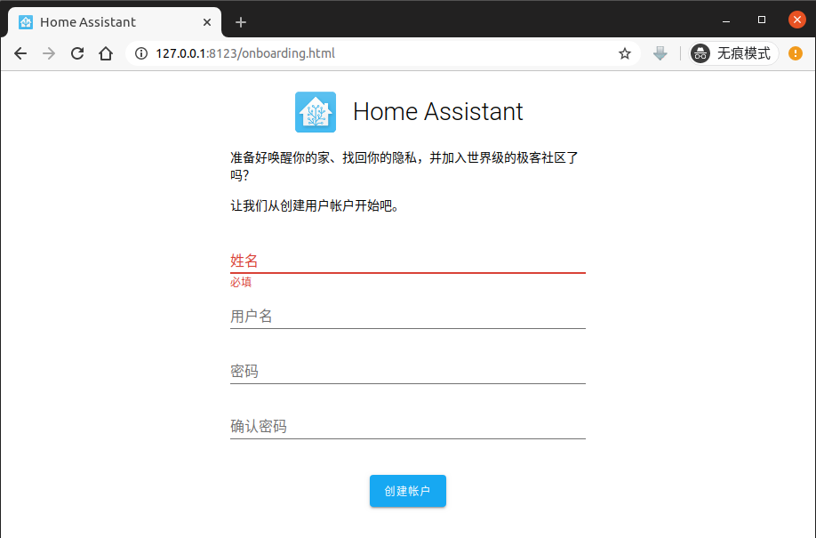
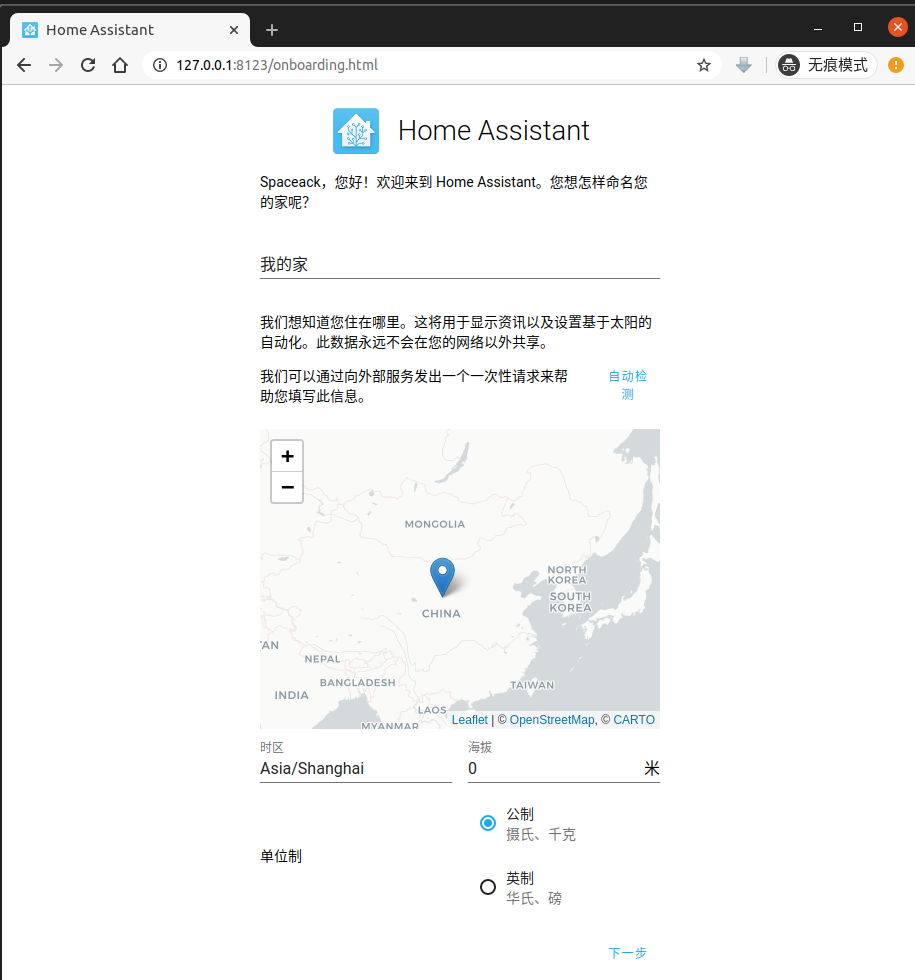
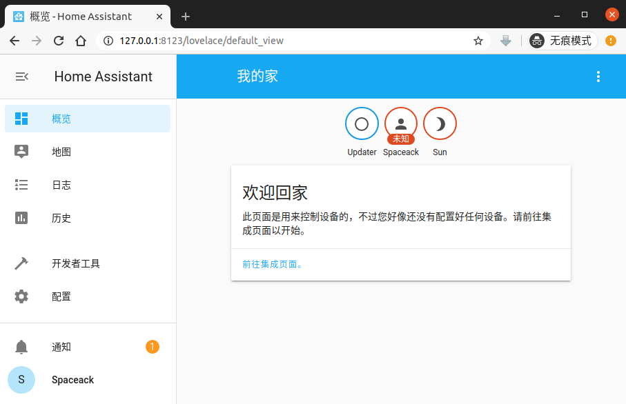

智能家居HomeAssistant关联yeelight智能吸顶灯
缘起
作为一名生命不止，折腾不息的小geek, 对享有智能生活， 掌握智能数据早已觊觎已久。奈何时间，空间，设备的限制一直未能如愿。
恰巧手头有一套yeelight智能吸顶灯，来发挥一直关注的HomeAssistant项目的威力！
今天就将智能家居这个小兴趣来作为忙碌工作生活中的调剂吧。
HomeAssistant是什么
HomeAssistant是一套开源的家庭自动化系统，以Python为主要开发语言。拥有支持集成各种智能硬件设备（智能电器，传感器，监控设备，etc），自动化任务编排，数据统计等功能。拥有无限的扩展能力。
安装 HomeAssistant
1 | # OS环境 Ubuntu20.04 |
注册基本信息



集成yeelight智能吸顶灯
基本配置（手动）
配置信息写入 /home/user/.homeassistant/configuration.yaml
1 | yeelight: |
重启hass服务生效
默认功能一瞥

支持单个灯控制与灯组开关控制。

支持亮度控制与色温控制。

灯组及系统的开关时间记录。

以可视化图表的形式展示历史记录。